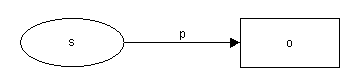
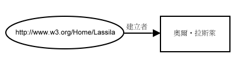

| 上一頁(P) | 上一層(T) | 下一頁(N) |
| 4. 陳述式的陳述式 | 6. 資源描述架構正式的語法定義 |
這份文件以三種方式呈現資料模型：三元值、圖形與延伸標記語言。這些呈現的方式在意義上是相等的。 The mapping between the representations used in this specification is not intended to constrain in any way the internal representation used by implementations.
資源描述架構資料模型正式的定義如下：
我們可以檢視一組陳述式(陳述式集合的成員)成為一個符號圖形，每個資源及每個文字都是一個頂點，一個三元值{p,s,o} 是一個由 s 指到 o 的弧，以 p 標示起來。也就是圖11這樣子：
完整說明
圖 11：簡單的陳述式圖形樣版
這可以讀成：
o is the value of p for s
或是(從左到右)：
s 有屬性 p 而屬性值是 o
或是：
the p of s is o
例如，這樣的句子：
Ora Lassila is the creator of the resource http://www.w3.org/Home/Lassila
以圖形表示如下：
完整說明
圖 12：簡單的陳述式圖形
以及相對應的三元值(陳述式集合的成員)會是：
{creator, [http://www.w3.org/Home/Lassila], "Ora Lassila"}
[] 包圍起來的代表經由統一資源識別符號所識別的資源，而引號包圍起來的代表文字。
使用三元值，我們可以解釋陳式述如何 reify(第4節有加以介紹)。請看這個陳述式：
{creator, [http://www.w3.org/Home/Lassila], "Ora Lassila"}
我們可以表達這個陳述式的 reification 而成為一個新的資源 X，就像下列這樣：
{type, [X], [RDF:Statement]}
{predicate, [X], [creator]}
{subject, [X], [http://www.w3.org/Home/Lassila]}
{object, [X], "Ora Lassila"}
From the standpoint of an RDF processor, facts (that is, statements) are triples that are members of Statements. Therefore, the original statement remains a fact despite it being reified since the triple representing the original statement remains in Statements. We have merely added four more triples.
type 屬性定義成提供原型型態。type 屬性正式的定義如下：
|
Furthermore, the formal specification of reification is:
|
The resource r in the definition above is called the reified statement. When a resource represents a reified statement; that is, it has an RDF:type property with a value of RDF:Statement, then that resource must have exactly one RDF:subject property, one RDF:object property, and one RDF:predicate property.
As described in Section 3, it is frequently necessary to represent a collection of resources or literals; for example to state that a property has an ordered sequence of values. RDF defines three kinds of collections: ordered lists, called Sequences, unordered lists, called Bags, and lists that represent alternatives for the (single) value of a property, called Alternatives.
Formally, these three collection types are defined by:
|
To represent a collection c, create a triple {RDF:type, c, t} where t is one of the three collection types RDF:Seq, RDF:Bag, or RDF:Alt. The remaining triples {RDF:_1, c, r1}, ..., {RDF:_n, c, rn}, ... point to each of the members rn of the collection. For a single collection resource there may be at most one triple whose predicate is any given element of Ord and the elements of Ord must be used in sequence starting with RDF:_1. For resources that are instances of the RDF:Alt collection type, there must be exactly one triple whose predicate is RDF:_1 and that is the default value for the Alternatives resource (that is, there must always be at least one alternative).